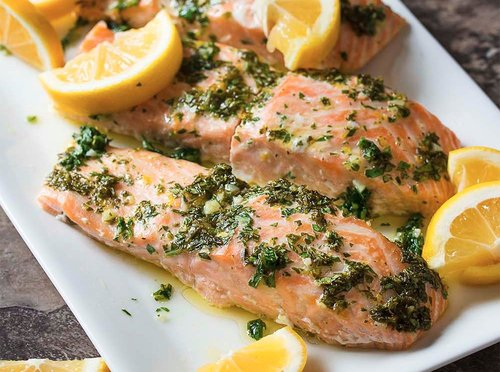

Lemon & Herb Salmon

DISCLAIMER: The creative content of this recipe was written entirely by ChatGPT. This page is merely a vessel. I offer no guarantee of food safety or quality.
Description
This seared salmon with lemon and herb sauce is a simple, delicious, and satisfying meal that is sure to impress. The combination of the crispy, seared salmon with the fresh, zesty lemon and herb sauce is truly mouthwatering. Give this recipe a try and see for yourself just how delicious it is!
Ingredients
- 1 salmon fillet
- Salt and pepper, to taste
- 1 tablespoon olive oil
- 1 lemon, juiced
- 2 tablespoons chopped fresh herbs (such as parsley, basil, or chives)
- 1/4 teaspoon salt
Steps
- Season the salmon fillet on both sides with salt and pepper.
- Heat the olive oil in a large frying pan over medium-high heat, and then add the salmon fillet to the pan.
- Cook the salmon for 3-4 minutes on each side, or until it is crispy and golden brown on the outside.
- While the salmon is cooking, prepare the lemon and herb sauce. In a small bowl, combine the lemon juice, chopped herbs, and 1/4 teaspoon of salt. Stir to combine, and then set the sauce aside.
- Once the salmon is cooked, transfer it to a serving plate and drizzle the lemon and herb sauce over the top. Serve the salmon with a side of steamed vegetables or a salad, and enjoy!